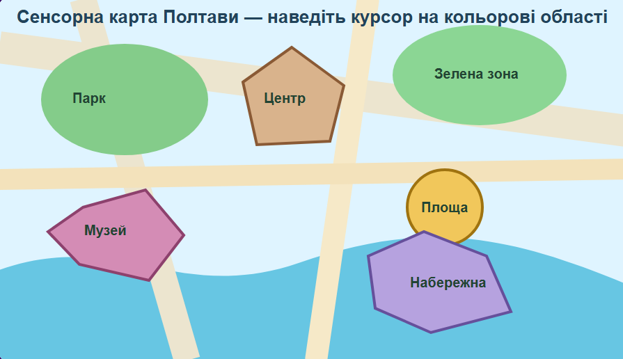

Наведіть курсор на кольорові області карти. Для кожної області задано власний спливаючий текст. Клацання переносить до короткого опису відповідної зони нижче.

Зелена зона для прогулянок і спокійного відпочинку.
Ділянка з деревами та місцями для відпочинку.
Місце, де зосереджені пам’ятки та важливі міські маршрути.
Відкрита громадська зона, зручна для зустрічей і подій.
Простір для знайомства з історією, культурою та мистецтвом.
Умовна прогулянкова зона біля води на навчальній карті.